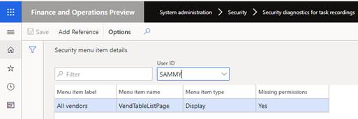

Sicherheitsdiagnose für Aufgabenaufzeichnungen
[!include[banner](../../includes/banner.md)]Bevor Sie beginnen
Dieses Thema enthält Informationen zum Analysieren und Verwalten von Sicherheitsberechtigungsanforderungen basierend auf einer Aufgabenaufzeichnung. Bevor Sie die Schritte in diesem Thema ausführen, müssen Sie über eine Aufgabenaufzeichnung des Geschäftsprozesses verfügen, den Sie analysieren möchten. Informationen zum Aufzeichnen eines Geschäftsprozesses finden Sie unter Aufgabenaufzeichnungsressourcen (This is an external link).
Sicherheit für eine Aufgabenaufzeichnung verwalten
- Wechseln Sie zu Systemadministration > Sicherheit > Sicherheitsdiagnose für die Aufgabenaufzeichnung.
- Öffnen Sie die Aufgabenaufzeichnung von ihrem Standort aus. Wählen Sie Von diesem PC aus öffnen oder Von Lifecycle Services aus öffnen aus, und wählen Sie dann Schließen aus.
- Dies öffnet die Seite Sicherheitsmenüelement-Details, auf der die für den Prozess erforderlichen Sicherheitsobjekte aufgelistet sind.
Note
Die Menüelemente Aktivität und Ausgabe sind nicht in der Liste enthalten.
- Im Feld Benutzer-ID wählen Sie einen Benutzer aus. Wenn der Benutzer für einige Menüelemente keine Berechtigungen hat, wird das Feld Fehlende Berechtigungen auf Ja aktualisiert.

Wählen Sie Referenz hinzufügen, um eine Liste der Sicherheitsobjekte anzuzeigen, einschließlich Rollen, Aufgaben und Berechtigungen, die die fehlende Berechtigung erteilen.
Wählen Sie ein Sicherheitsobjekt aus der Liste aus:
- Wenn Rolle ausgewählt ist, wählen Sie Dem Benutzer Rolle hinzufügen aus. Dies öffnet die Seite Benutzer zu Rollen zuweisen. Ausführlichere Informationen finden Sie auf der Seite Zuweisen von Benutzern zu Sicherheitsrollen.
- Wenn Aufgabe ausgewählt ist, wählen Sie Aufgabe zu Rolle hinzufügen aus, wählen Sie die Rollen aus, zu denen die Aufgabe hinzugefügt werden soll, und wählen Sie dann OK aus.
- Wenn Recht ausgewählt ist, wählen Sie Recht zu Aufgaben hinzufügen aus, wählen Sie die Rollen aus, zu denen die Aufgabe hinzugefügt werden soll, und wählen Sie dann OK aus.